Direct Memory Access (DMA) Lab#
In this lab, we will use the Direct Memory Access (DMA) controller to regularly service the ADC in a real-time data processing application. By using the DMA to move data, the CPU is saving instruction cycles that could be used on other critical tasks. Specifically, we will be using the ePWM and ADC modules to generate and sample a PWM waveform at a chosen sampling rate. The DMA will then be used to store the ADC samples in a ping pong buffer, so groups of samples can simultaneously be processed by the CPU in an interrupt service routine (ISR). In addition to reviewing basics for the ePWM and ADC modules, this lab should inform readers of how and why the DMA can be used to reduce load on the CPU.
F280013x Device Family
This lab is not applicable to the F280013x device family since the F280013x device family does not have a DMA module.
Solution#
All solutions are available
in the directory: [C2000Ware_Install_Path]/training/device/[device_name].
Introduction#
In this lab, we will use the Sysconfig GUI to generate a waveform with one of the ePWM modules, like the PWM lab. Also like the PWM lab, the ADC will be setup to sample the PWM waveform at a chosen sampling rate. At the end of each conversion, however, the ADC will trigger the DMA rather than triggering an interrupt on the CPU.
The first time that the DMA is triggered will be the start of the first ‘Transfer’. Since we will have configured our DMA to generate an interrupt at the start of ‘Transfers’, the DMA will immediately trigger an interrupt before the first ‘Burst’ is sent. This very first interrupt should set the DMA destination address to the Ping Buffer, while the CPU copies the contents of the still empty Pong Buffer into a buffer called AdcBuf. During the next interrupt, the destination address of the DMA will change to the Pong Buffer, while the CPU copies from the Ping Buffer. Because we set the ‘Transfer’ size of the DMA to be 50 ‘Bursts’, the DMA interrupt will be triggered on every 50th ADC conversion before the first ‘Burst’ of the ‘Transfer’. You can see the details of the interrupt in the dma_Ch1ISR code block included later in the lab.
You will be able to view the contents of any of these buffers in Code Composer Studio (CCS). In this application, the DMA allows the CPU to reclaim instruction cycles that would have been necessary to continuously copy data from the ADC registers into memory, which allows for more instruction cycles to be allocated for other tasks.
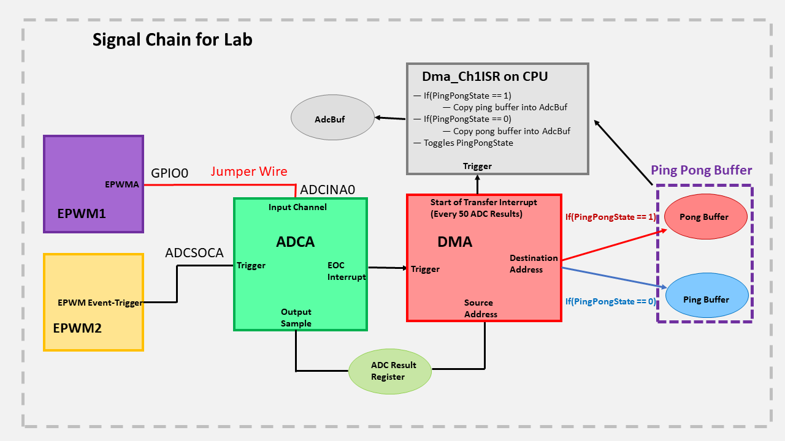
Lab Setup#
Hardware Setup#
You will need the following hardware for this lab:
A C2000 controlCARD or LaunchPad with the supplied USB cable.
Jumper cables.
Oscilloscope (optional).
Use the supplied USB cable to connect the USB Micro or USB Mini Type-B connector to the board. Connect the USB Standard Type-A connector into your computer USB port. You should see some LEDs light up on your board. In addition to powering the board, a JTAG communication link is also established between the device and Code Composer Studio. Later in the lab we will be routing the output pin of the PWM waveform to the input pin of the ADC, so make sure that you have enough jumper cables to facilitate this.
Software Setup#
The following software will need to be installed on your computer:
Import Empty project#
Our first task is to import an empty project to our Code Composer Studio (CCS) workspace. The basic instructions are as follows:
Open CCS and go to Project→Import CCS Projects. A new window should appear. Ensure that the Select search-directory option is activated.
Click the Browse button and select the
[C20000ware_Install_dir]/training/device/[device]/empty_labdirectory. Note that the default Windows [C20000ware_Install_dir] isC:/ti/c2000/C2000Ware_4_xx_xx_xx.Under Discovered Projects, you should now see the
lab_[board]_[device]project. Select the appropriate project for either the control card or the launchpad.

Click Finish to import and copy the
lab_[board]_[device]project into your workspace.Rename the project to your liking
“Right-click on the project in Project Explorer pane”. Select ‘Rename’ from the drop down menu and rename the project to ‘c2000_dma_lab’ or a name of your choosing.
Now click the ‘Down Arrow’ located to the left of the imported project to expand it and select lab_main.c. Right-click on the file, and select ‘Rename’ to rename the file to c2000_dma_lab_main.c or a name of your choosing.
Configure the GPIO#
We will configure the necessary GPIO pins as shown below. Our PWM waveform will be output from ePWM1A. We will also configure one of the board LEDs as an indicator.
Steps to add GPIO configuration:#
In the project, open the
.syscfgfile by double-clicking it.Click ‘+’ in GPIO to add GPIO line configuration for LED4.
Select GPIO number for your device and board from the table below.
Device |
LaunchPad |
controlCARD |
|---|---|---|
F28379D |
Pin-66 (GPIO-31) |
Pin-66 (GPIO-31) |
F2838x |
n/a |
Pin-66 (GPIO-31) |
F28004x |
Pin-81 (GPIO-23) |
Pin-99(GPIO-31) |
F28002x |
Pin-2 (GPIO-31) |
Pin-2 (GPIO-31) |
F28003x |
Pin-83(GPIO-22) |
Pin-99(GPIO-31) |
The parameters should be filled like below.
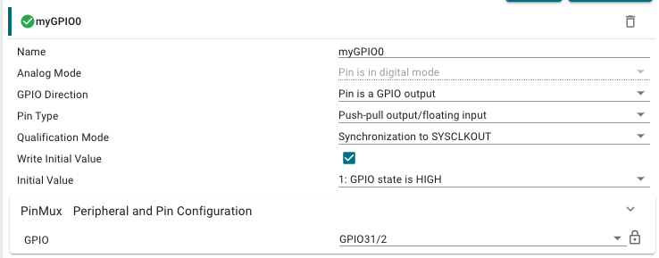
Configure ePWM1 and ePWM2#
For Devices F2837xD, F2837xS, F2838x, and F28003x:
The SYSCLK generated from the internal oscillator is higher than 100MHz on these devices. This means that the EPWM clock for F28003x is 120MHz. The maximum EPWM clock is still 100MHz on F2837xD, F2837xS, and F2838x, but the ADC clock is equal to the device SYSCLK. When clock dividers are selected in the following modules, you may need to modify your dividers to achieve exactly the same results.
You may also notice that your device has different parameters than the ones seen in the images below. Do not worry, as all of the essential parameters for this lab are available on all devices.
You may notice that the next sections are very similar to the ePWM lab, but be careful, as the ADC configuration is slightly different. The code below configures ePWM1A to output a 2kHz PWM waveform with a 25% duty cycle. This PWM waveform will be used as a data input source. Notice that ePWM1A is setup to output a symmetrical PWM waveform, that is, the time base counter is setup in up/down mode. Given that we are in up/down mode and we want our PWM waveform to have a frequency of 2kHz, we have
\(\text{Time Base Period}=\frac{f_{tbclk}}{2f_{pwm}}=\frac{100* 10^6}{2* 2000}=25000.\)
Next, we note the configuration of the duty cycle. Since we are in up/down mode and we want our PWM waveform to have a 25% duty cycle, we have
\(\text{Counter Compare Value}=(1-\frac{duty}{100})*tbprd=(1-\frac{25}{100})*25000=18750.\)
The action qualifier submodule is then set to force the output to be high on a count up event and low on a count down event. This results in the desired PWM waveform.
In this lab, the ADC will be used to sample the generated PWM waveform from ePWM1A at a rate of 50kHz. The below code configures ePWM2 to trigger a SOC on the ADC at a rate of 50kHz. Unlike ePWM1A, notice that ePWM2 is setup to operate in up count mode, hence, we have
\(\text{Time Base Period}=\frac{f_{tbclk}}{f_{pwm}}-1=\frac{100* 10^6}{50000}-1=1999.\)
To implement these specifications with SysConfig, first click the ‘+’ by EPWM in the SysConfig screen to open an instance of the EPWM module.
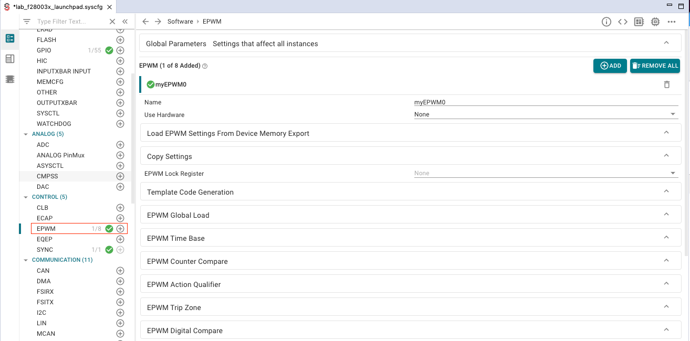
Expand the ‘EPWM Time Base’ dropdown menu, and apply the changes circled below.
Expand the ‘EPWM Counter Compare’ dropdown menu, and again apply the circled changes.
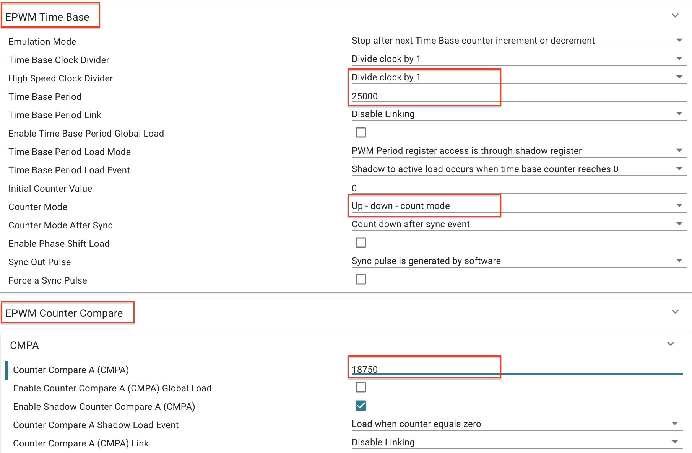
Expand the ‘EPWM Action Qualifier’ dropdown menu, then apply the changes circled below.
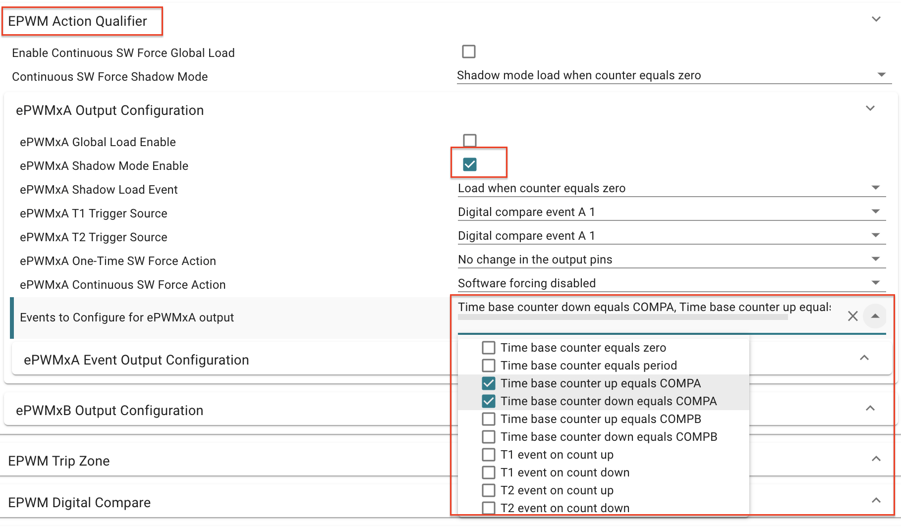
Expand the ‘ePWMxA Event Output Configuration’ dropdown menu, then apply the changes circled below.
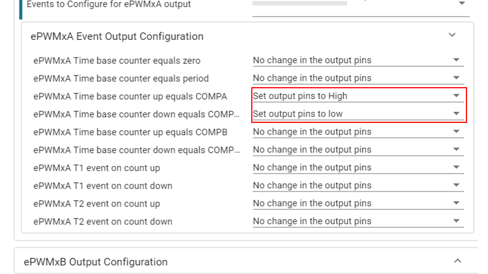
Expand the ‘PinMux Peripheral and Pin Configuration’ dropdown menu. For ‘EPWM Peripheral’, make sure to select instance EPWM1. Also, make sure to select ‘GPIO0’ for ‘EPWMA’ and select ‘GPIO1’ for ‘EPWMB’, as shown below. The pin number will vary based on hardware.

Now click the ‘+’ by EPWM to open another instance of the EPWM module.
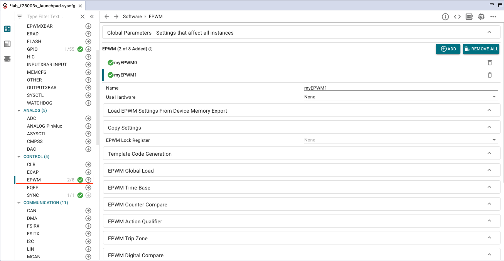
Expand the ‘EPWM Time Base’ dropdown menu, and apply the changes circled below.
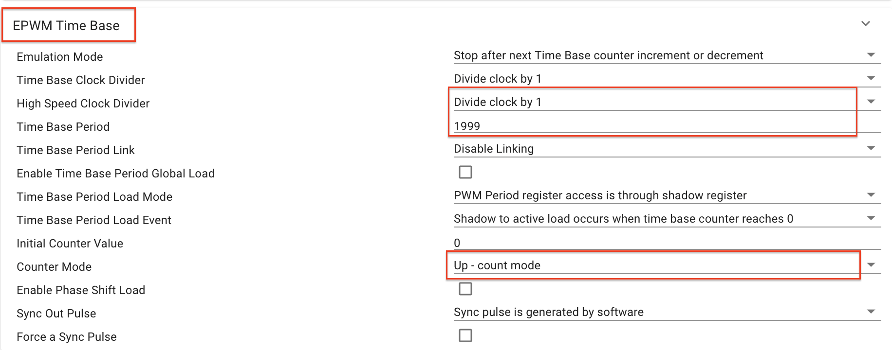
Expand the ‘EPWM Event-Trigger’ dropdown menu, and apply the changes circled below.
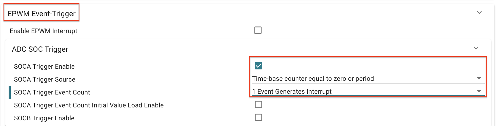
Expand the ‘PinMux Peripheral and Pin Configuration’ dropdown menu, and apply the changes circled below. Also, make sure to select ‘GPIO2’ for ‘EPWMA’ and select ‘GPIO3’ for ‘EPWMB’, as shown below. The pin number will vary based on hardware.
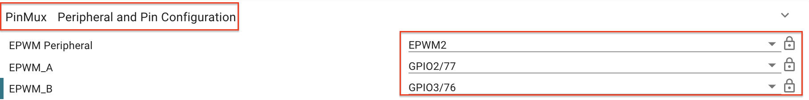
This concludes the configuration of the ePWM modules.
A more detailed explanation of the ePWM configuration
The configuration of both ePWM1A and ePWM2 above is identical to that of the lab in ePWM Lab, so you should see that lab for a more detailed explanation.
Configure the ADC#
In the previous section, we explained that ePWM2 would be triggering a SOC event on the ADC. In this section, we will provide the code to configure the ADC. More details about the configuration of the ADC can be found in Analog-to-Digital Converter (ADC). However, notice that we have setup a SOC to be triggered by ePWM2 and that we have setup the ADC to interrupt at the end of a conversion. This interrupt will be utilized by the DMA so it knows when to load new samples from the ADC onto the ping pong buffer. The ADC is also setup in continuous mode so that the ADC register always contains the most recent sample.
Add ADC by clicking the ‘+’ by ADC in the SysConfig screen. Make sure to make the changes circled below. If your device SYSCLK is not 100MHz, you will need to change the ADC Clock Prescaler to acheive the same results.
For the ‘SOC0 Sample Window[SYSCLK counts]’ parameter, the same value may result in a different ‘SOC0 Sample Time[ns]’ on different devices, due to varying SYSCLK frequencies across devices. Make sure that the generated ‘SOC0 Sample Time[ns]’ is about 80ns.
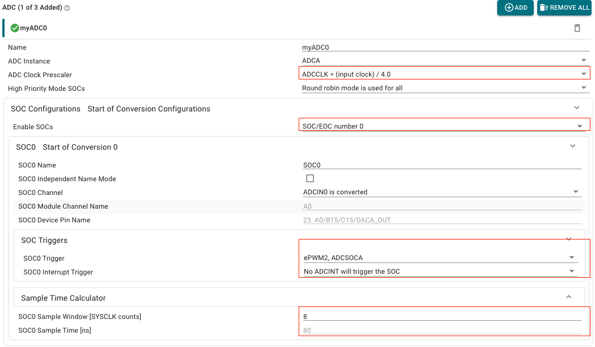
Expand the ‘ADC INT Configurations’ dropdown menu, make the changes circled below.
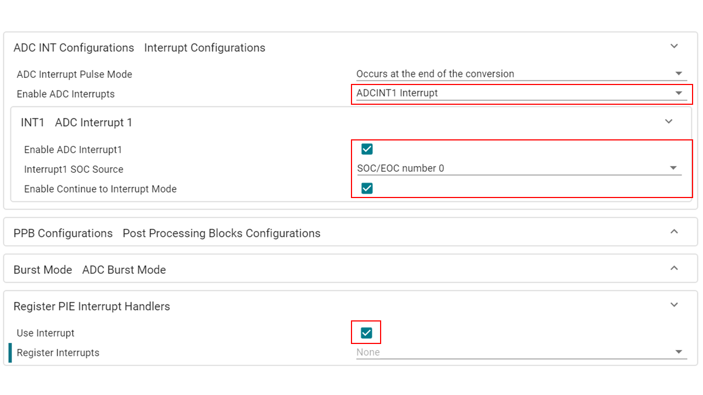
For Devices F280025C, F280039C, F280049C, and F2800137:
Set analog reference voltage using asysctl parameter.
If the ADC module has already been added, select ASYSCTL in the ANALOG group and change the analog reference voltage to be an internal voltage of 2.5V. Otherwise, add ASYSCTL by clicking ‘+’ in ANALOG group and then add internal reference of 2.5V.
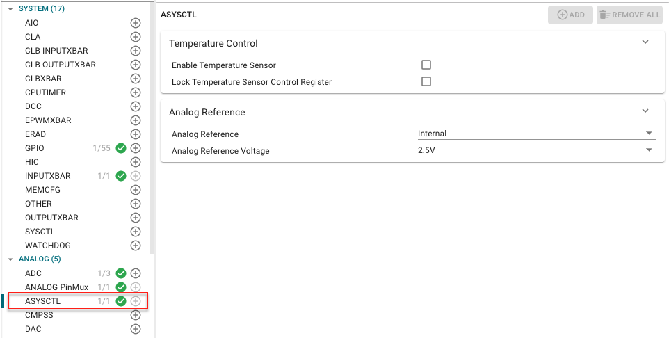
Configure the DMA#
In this section, we will configure the DMA using SysConfig GUI tool. There are two addresses which will be used during the configuration. These are source and destination addresses. We will configure the trigger and mode of DMA channel 1. The trigger for DMA channel 1 is set to be from ADCA1, which signals to the DMA that a new sample is ready to be moved to the ping pong buffer. Notice that one-shot mode has been disabled and continuous mode has been enabled. Continuous mode ensures that the DMA is re-initialized after it completes a full transfer, which is needed to continuously retrieve samples from the ADC, otherwise, the DMA would halt. Additionally, notice that the word size is set to be 16 bits.
Click + next to DMA (in COMMUNICATION Group) to add DMA instance
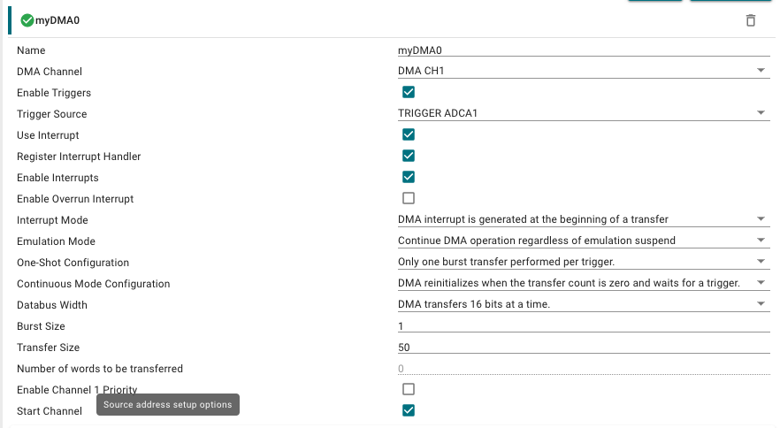
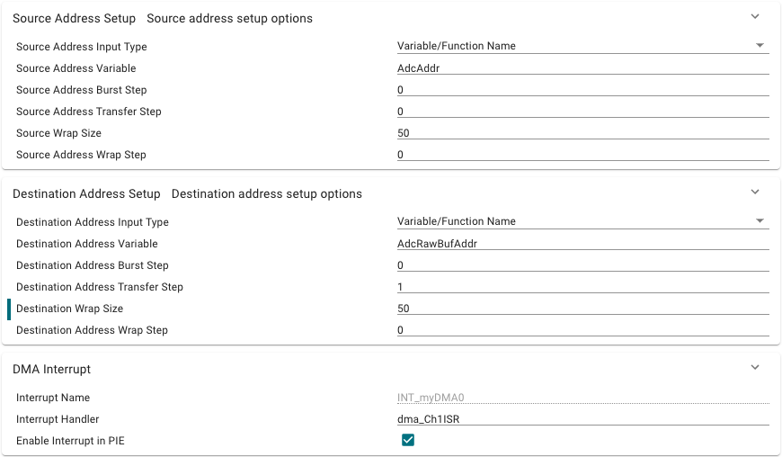
This concludes the configuration of the DMA.
Configure CPUTIMER0#
In this section, we provide the code to setup CPUTIMER0. This timer will be
used to capture the runtime of the DMA ISR. It is important that the runtime of
the DMA ISR does not exceed the product of the ADC sampling period with
ADC_BUF_LEN because this implies that the DMA will start to overwrite the
contents of next buffer. Notice how the timer period is set to be the maximum
value of the 32-bit counter. The system clock will be driving this counter at a
frequency of DEVICE_SYSCLK_FREQ.
Click + next to CPUTIMER (in SYSTEM Group) to add CPUTIMER instance
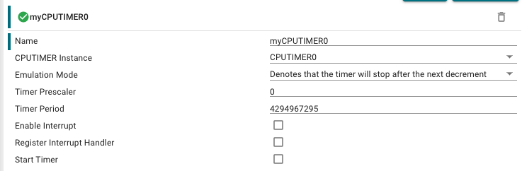
Define global macros and variables#
First, we will define some necessary macros and global variables, and we will
configure the destination and source address of the DMA transfer. The global
variable AdcBufRaw points to a ping pong buffer of size 2*50 and type
uint16_t. Accordingly, the ping buffer is from offset 0 to 50/2-1 and the
pong buffer is from offset ADC_BUF_LEN to 2*50-1. However, remembering that
the DMA only has access to GSx RAM, we use the #pragma DATA_SECTION (AdcBufRaw, "ramgs0") line to tell the linker to place AdcRawBuf in GS0 RAM.
The section ramgs0 should be included in the linker scripts provided by the
empty_driver_lib project template that we have used. Notice that we have set
the DMA channel 1 destination address to be AdcBufRaw, i.e., the ping buffer,
and that we have set the DMA channel 1 source address to be the register that
contains the samples from ADCINA0. In order to use driverlib, make sure that
you have included driverlib.h and device.h above these definitions. A
description of these macros and global variables will be addressed in the
following sections.
In your project, click on the .c file to open it, and add the following:
#define ADC_BUF_LEN 50 // Buffer length.
#pragma DATA_SECTION(AdcBufRaw, "ramgs0");
uint16_t AdcBufRaw[2*ADC_BUF_LEN]; // The Ping Pong buffer.
uint16_t AdcBuf[ADC_BUF_LEN]; // Buffer for CCS plotting.
uint16_t PingPongState = 0; // Ping Pong buffer state.
uint16_t LedCtr = 0; // Counter to slow LED toggling.
uint16_t TaskDelayUs = 0; // Delay to simulate data processing task.
uint16_t OverCnt = 0; // Counter to store DMA overwrites.
uint32_t TimDiff; // To measure the DMA ISR time.
const void* AdcAddr = (void*)(ADCARESULT_BASE + ADC_O_RESULT0);
const void* AdcRawBufAddr = (void*)AdcBufRaw;
Define the DMA interrupt service routine#
Lastly, we will write the ISR for DMA channel 1. The first task of this ISR is to clear the necessary interrupt flags and initialize some local variables. Notice that we also reset and start CPUTIMER0 to measure the runtime of this ISR.
interrupt void dma_Ch1ISR(void)
{
Interrupt_clearACKGroup(INTERRUPT_ACK_GROUP7);
CPUTimer_startTimer(myCPUTIMER0_BASE);
uint16_t *AdcBufPtr = AdcBuf;
uint16_t *AdcBufRawPtr;
uint16_t i;
Next, we will set up our indicator LED to toggle at a rate of 1Hz. It is reasonable to assume that the DMA will be able to transfer words at the ADC sampling rate, which is 50kHz. Thus, we know that this ISR is being called at a rate of
\(\frac{\text{sampling rate}}{\text{bursts per transfer}}=\frac{50000}{50}=1000\text{Hz}.\)
Consequently, the global variable LedCtr is used as a counter to divide the
ISR call rate by 1000 in order to toggle the LED at a rate of 1Hz.
if (LedCtr++ >= 1000) {
GPIO_togglePin(myGPIO0);
LedCtr = 0;
}
The ping pong buffer implemented in this lab is a type of double buffer that allows the CPU to process one buffer of samples from the ADC while the DMA fills the other buffer with new samples. As discussed in the last section, this ISR will be triggered at the start of transfer on DMA channel 1. Thus, this ISR must continuously alternate between the following states:
Process the pong buffer and set the DMA channel 1 destination address to point to the ping buffer.
Process the ping buffer and set the DMA channel 1 destination address to point to the pong buffer.
The global variable PingPongState is used as a state register. Note that
PingPongState is toggled in the ISR. In addition, note that our processing
step involves copying the contents of the ping or pong buffer into AdcBuf,
which is another buffer of size ADC_BUF_LEN. In the debug session, we will
use AdcBuf to view the ADC samples in real-time via the plotting capabilities
of CCS.
if (PingPongState == 0) {
// Set DMA address to start at ping buffer.
DMA_configAddresses(DMA_CH1_BASE,
(const void *)AdcBufRaw,
(const void *)(ADCARESULT_BASE + ADC_O_RESULT0));
// Fill AdcBuf with contents of the pong buffer.
AdcBufRawPtr = AdcBufRaw + ADC_BUF_LEN;
for (i = 0; i < ADC_BUF_LEN; i++) {
*(AdcBufPtr++) = *(AdcBufRawPtr++);
}
} else {
// Set DMA address to start at pong buffer.
DMA_configAddresses(DMA_CH1_BASE,
(const void *)(AdcBufRaw + ADC_BUF_LEN),
(const void *)(ADCARESULT_BASE + ADC_O_RESULT0));
// Fill AdcBuf with contents of the ping buffer.
AdcBufRawPtr = AdcBufRaw;
for (i = 0; i < ADC_BUF_LEN; i++) {
*(AdcBufPtr++) = *(AdcBufRawPtr++);
}
}
PingPongState ^= 1;
In order to simulate more data processing, we add a delay that can be changed
via the global variable TaskDelayUs. We will change the value of
TaskDelayUs in real-time using the debug features of CCS.
for (i = 0; i < TaskDelayUs; i++) {
DEVICE_DELAY_US(1);
}
Finally, we stop the counter and calculate the elapsed time it took for the ISR
to complete. We can safely ignore the counter overflow in this case. To see
why, consider a system clock speed of 200 MHz—given that CPUTIMER0 is
32-bit, this would mean that CPUTIMER0 would overflow approximately every
21.5 seconds which is large enough for us to ignore. The number of counter
ticks that it takes for the ISR to complete is stored in TimDiff.
Since the DMA is triggering this ISR at a rate of 1000Hz as shown earlier, this
implies that the ISR duration cannot exceed 1ms, otherwise, the DMA will start
to overwrite the contents of the other buffer before the CPU has a chance to
read it. The number 0.001*DEVICE_SYSCLK_FREQ is the approximate number of
counter ticks needed for a duration of 1ms. Accordingly, if we find that
TimDiff is greater than or equal to 0.001*DEVICE_SYSCLK_FREQ, this implies
that the DMA has started overwriting the contents of the next buffer.
If this is the case, we increment the global variable OverCnt, which stores
the number of times the ISR runtime exceeds 1ms. We can view OverCnt in
real-time via the debug features of CCS.
CPUTimer_stopTimer(myCPUTIMER0_BASE);
TimDiff = 0xFFFFFFFF - CPUTimer_getTimerCount(myCPUTIMER0_BASE);
if (TimDiff >= ((uint32_t)(0.001*DEVICE_SYSCLK_FREQ))) {
OverCnt++;
}
}
DMA Buffer Overwriting Fix
If you find that the ISR is taking too long to complete and the DMA is overwriting the next buffer, try increasing the buffer size and/or decreasing the ADC sample rate. Both of these changes will slow down the DMA and give the CPU more time to process data.
Define main()#
Next, we will populate main as shown below.
That being said, we still need to know the system clock frequency in order to
configure the ePWM modules necessary for this lab. The system clock frequency
value that is configured via Device_init() is defined as DEVICE_SYSCLK_FREQ
in [projectroot]/device/device.h. Observe that the main function only handles
initialization routines. Most of the activity in this lab will lie in the DMA
interrupt service routine.
void main(void)
{
Device_init();
Interrupt_initModule();
Interrupt_initVectorTable();
Board_init();
EINT;
ERTM;
for(;;) {
NOP;
}
}
This concludes the coding portion of this lab.
Build and run interactive debug session#
Ensure that the USB cable from your LaunchPad or controlCARD is connected to your computer. If you have a LaunchPad, right click on your project in the project explorer pane and click Properties→Build→C2000 Compiler→Predefined Symbols, add
_LAUNCHXL_F28XXXXXas a predefined symbol according to yourdevice.hheader file. Thedevice.hfile can be found in the[projectroot]/device/directory.Under the Build button, activate the CPU1_RAM build configuration. Use the CPU1_LAUNCHXL_RAM build configuration if it is available and if you are using a LaunchPad. Build the program and fix any compilation errors.
Create a new debug configuration. Set the target configuration to be
${[workspace_loc]:/[projectroot]/targetConfigs/TMS320F28XXXXX_LaunchPad.ccxml}if using a LaunchPad, else, use${[workspace_loc]:/[projectroot]/targetConfigs/TMS320F28XXXXX.ccxml}. Select the current project to be loaded to CPU1. Press Apply and close the window.Connect the ePWM1A GPIO pin to the ADCINA0 GPIO pin using a jumper cable. If you have an oscilloscope, connect a probe to the ePWM1A GPIO pin on your board.
LaunchPad
Device |
ADCINA0 Pin |
EPWM1A Pin |
|---|---|---|
F28379D |
30 |
40 |
F2838x |
n/a |
n/a |
F28004x |
70 |
80 |
F28003x |
70 |
40 |
ControlCARD
Device |
ADCINA0 Pin |
EPWM1A Pin |
|---|---|---|
F28379D |
9 |
49 |
F2838x |
9 |
49 |
F28004x |
9 |
49 |
F28003x |
9 |
49 |
Now we will start the debug session. Under the debug button, start the debug session using the new configuration. You should now see the debugging session open up and the debugger should have reached
main().Click the Resume button. You should see the LED on your board toggling at about 1Hz which indicates that the DMA ISR is being called at 1000Hz as expected.
Next, we will check the ping pong buffer. In the memory browser, search for the address
&AdcBufRaw. Enable Continuous Refresh and ensure that you are viewing the memory in 16-bit hexadecimal. Watch the memory browser update in real-time. If all is well, you should notice thatAdcBufRawoccupies 100 16-bit memory locations and roughly 25% percent of the locations have a value of0x0FFFwhile the others contain something close to0x0000. This suggests that the DMA is transferring the ADC samples correctly into the ping pong buffer and the DMA ISR is correctly alternating the DMA channel 1 destination address pointer between the ping and pong buffers at the start of a transfer.
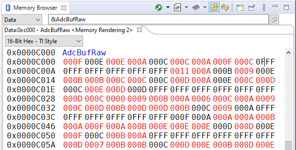
Now we will view the sampled PWM waveform in real-time using
AdcBuf. Click on Tools→Graph→Single Time, set Acquisition Buffer Size to be 50, set Dsp Data Type to be 16 bit unsigned integer, set Sampling Rate Hz to be 50000, set Start Address to be AdcBuf, set Time Display Unit to be us, and leave the other settings as their default value. Click OK and you should see the plot window open up. Activate the Continuous Refresh option in the plot window. You should now see several periods of the PWM waveform in the plot updating in real-time. If desired, you can use the measurement tool to verify that the duty cycle is 25% and the period is 500us. Leave the plot window open.
Important
Note: If you do not see CCS menu Tools → Graph, please refer to Getting Started (Setting CCS for graph) to see the instruction on how to enable CCS graphing tool in your perspective.
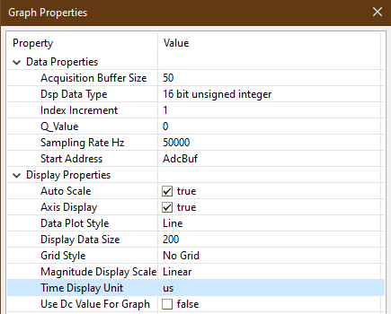
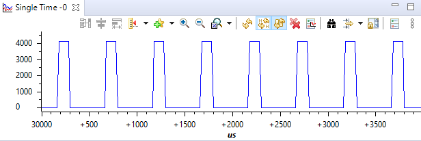
Finally, we will experiment with different values of delay in the DMA ISR. Add
OverCnt,TimDiff, andTaskDelayUsto the watch expression list and enable Continuous Refresh. Play with different values ofTaskDelayUsfrom 0–1000. Observe the changes inOverCntandTimDiff. At some point, you will find a value closer to 1000 that will causeOverCntto start to increment, which implies that the DMA is overwriting the contents of the next buffer. Even though the DMA is overwriting the next buffer, notice that the plot window appears to be unaffected. This is because the waveform we are viewing is periodic, thus, subsequent buffers will all contain the same information. However, if we were viewing an aperiodic waveform, we would be able to observe discontinuities and other artifacts in the signal due to the DMA overwriting the next buffer.Terminate the debug session and close the project. This concludes the lab assignment.
Full Solution#
The full solution to this lab exercise is included as part of the C2000Ware
SDK. Import the project from
[C2000Ware_Install_Path]/training/device/[device_name]/advance_topics/lab_dma.
Feedback
Please provide any feedback you may have about the content within C2000 Academy to: c2000_academy_feedback@list.ti.com